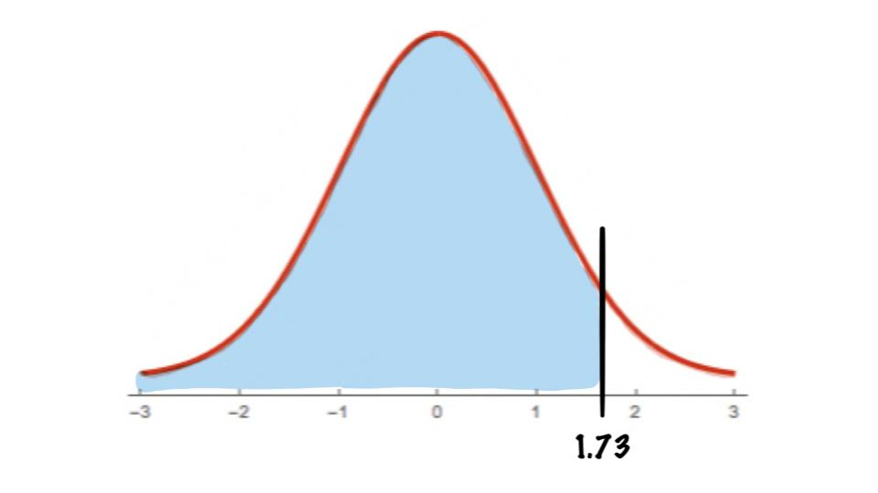
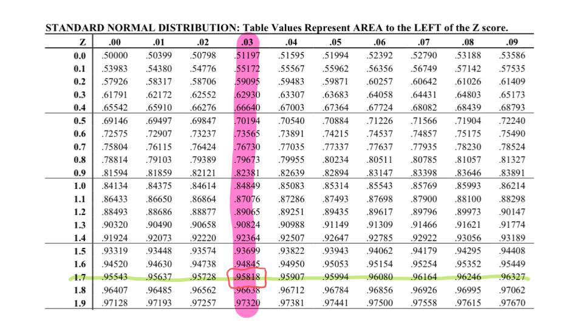

Find the area under the standard normal distribution curve to the left of \(z=1.73\).

To do this we need to look at our table

And we see in the 1.7--0.03 spot on our table we have
\[P(z<1.73)=0.95818\]